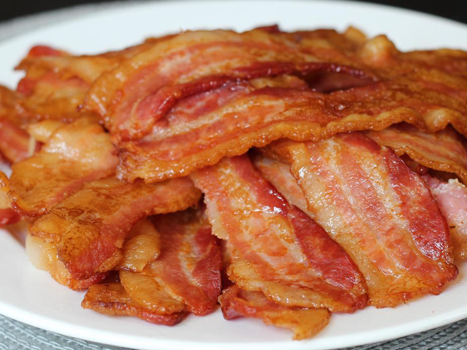

Crispy Bacons

Description
This is one of the easiest and quickest way to make crispy bacons for a crowd or gathering. Recipe originated from JOYCE (posted on allrecipes.com).
Ingredients
- 1 pound thick sliced bacon
Steps
- Preheat the oven to 350 degrees F (175 degrees C). Line a baking sheet with aluminum foil.
- Arrange the bacon in a single layer on the prepared sheet with the edges touching or slightly overlapping.
- Bake in the preheated oven to desired degree of doneness, 10 to 15 minutes. Remove bacon from the baking sheet with tongs or a fork, and drain on a paper towel-lined plate.